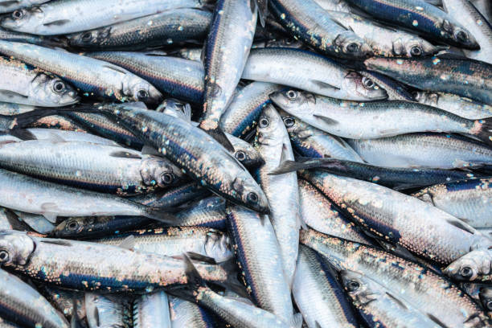

## Error: ## ! targets data store _targets not found. Utility functions like tar_read() and tar_load() require a pre-existing targets data store (default: _targets/) created by tar_make(), tar_make_clustermq(), or tar_make_future(). Details: https://books.ropensci.org/targets/data.html
## Error: object 'afa_pct' not found
## Error: object 'cs_pct_tbl' not found